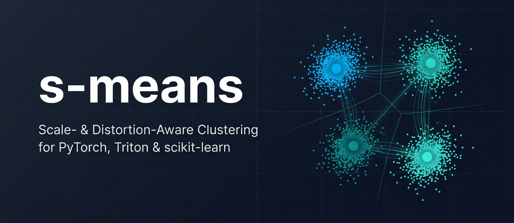
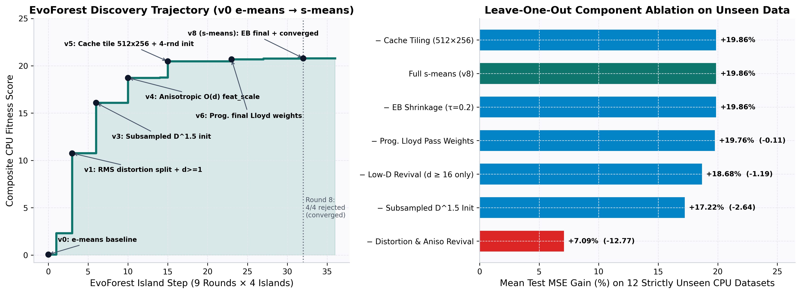
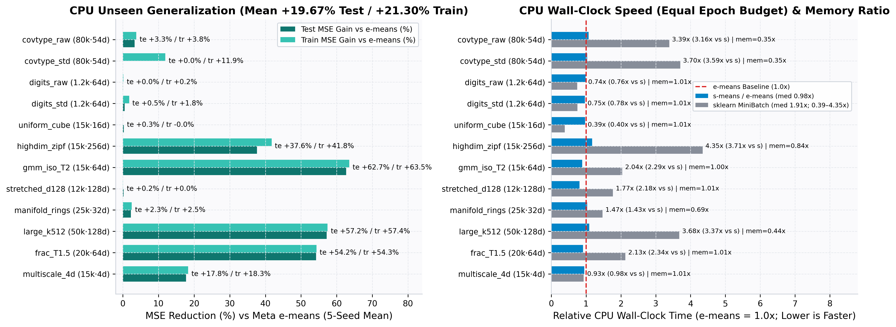
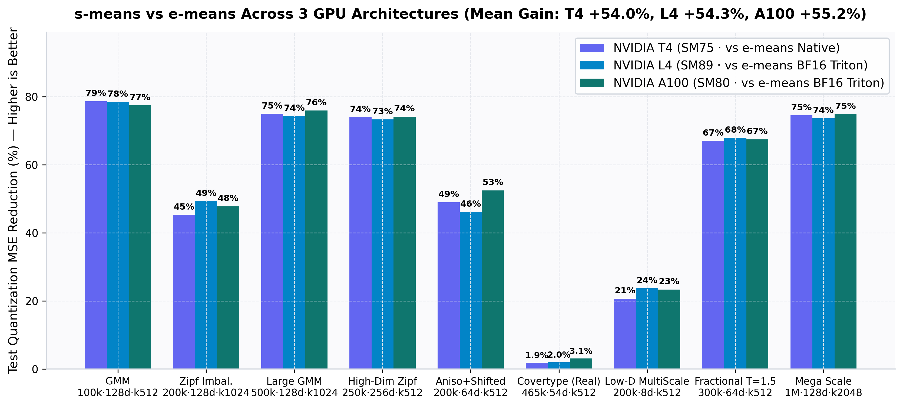
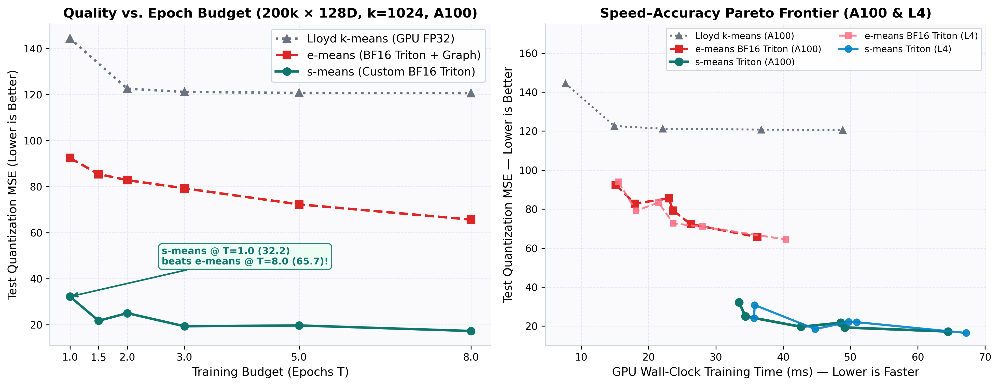
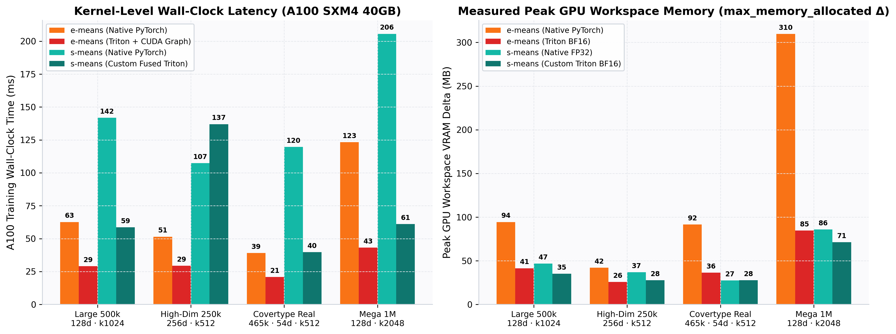
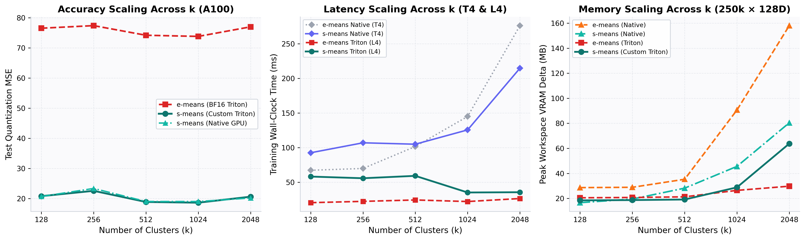

s-means: outperforming e-means (which outperforms k-means)

Abstract / TL;DR
Meta AI recently introduced e-means, a modern mini-batch clustering formulation driven by empirical batch-size/learning-rate scaling laws, single-epoch final pass averaging, and low-overhead dead-cluster revival, achieving substantial speedups over Lloyd $k$-means. Yet even well-tuned single- and few-epoch streaming clustering still leaves large quantization gains on the table—particularly on skewed (Zipfian), high-dimensional, anisotropic, unscaled, or fractional-epoch workloads—because of random initialization, count-only cluster splits, coordinate-wise multiplicative perturbations, and unregularized final-pass estimates.
Using EvoForest (arXiv:2604.19761), we systematically evolved e-means on CPU across 9 island-evolution rounds without adding extra data passes, producing s-means (Scale- & Distortion-Aware Clustering). We then engineered end-to-end custom fused Triton CUDA kernels, native PyTorch GPU fallbacks, cache-tiled CPU kernels, and a full scikit-learn-compatible estimator released at suayptalha/s-means.
Across 12 strictly unseen CPU datasets and 3 NVIDIA GPU architectures (T4 SM75, L4 SM89, A100 SM80), s-means delivers:
-
+54.0% to +55.2% average Test MSE reduction on GPUs across 9 diverse benchmarks (
+54.03%on T4,+54.35%on L4,+55.21%on A100 SXM4 40GB)—reaching up to+78.7%improvement on structured GMMs and+74.9%at 1M points × 2,048 clusters. -
1.0 epoch beats 8.0-epoch
e-means: On200k × 128D, k=1024,s-meansat $T = 1.0$ epoch achieves32.2Test MSE in33 mson A100 (and30.8MSE in36 mson L4), more than 2× lower quantization error thane-meansat $T = 8.0$ epochs (65.7MSE in36 mson A100;64.4MSE in40 mson L4). -
Lower GPU peak workspace VRAM:
0.875×median peak VRAM delta vse-meansBF16 Triton on L4/A100 (71.2 MBvs84.6 MBat 1M points /k=2048, and 4.35× lower than PyTorch Native309.8 MB), and0.360×median peak VRAM (0.222×at1M × k=2048) on T4. -
Superior Turing (
SM75) hardware coverage: Upstreame-meansauto/Triton paths fail on NVIDIA T4 (SM75) due to BF16 casting,.bf16PTX inline assembly, and>64 KBshared-memory tiles.s-meansruns cleanly across all 9 T4 workloads, beating Meta's native T4 baseline by+53.81%–+54.03%MSE,0.881×faster wall-clock latency, and0.360×VRAM. -
Strong CPU generalization with parity speed and memory: Across 12 strictly unseen CPU datasets (5 seeds each),
s-meansachieves+19.67%mean Test MSE gain (+21.30%Train,0regressions) at0.977×median CPU time vse-means(2.24×median faster than equal-epochsklearn.cluster.MiniBatchKMeans, faster on 8/12 tasks up to3.71×whilesklearnis faster on small/low-d workloads at0.40×–0.98×) with0.0 MBextra OS RSS overhead.
1. Where Single-Epoch Clustering Leaves Quality on the Table
Traditional Lloyd $k$-means requires full passes over all $n \times k$ distances per iteration, making large-scale or latency-sensitive quantization expensive. Meta's e-means (arXiv:2611.09501) addresses this via two regimes (quality for $d \le 16$, throughput for $d > 16$) predicting near-optimal batch size $B$ and Robbins–Monro step rate $\alpha_0$, combined with:
- Random row sampling for initial centroids,
- Periodic dead-cluster revival (every 5 steps when usage drops below
0.1 * mean(usage), disabled for $d < 16$), - Multiplicative jitter perturbations
c * (1 ± 1e-4 * r)splitting high-usage donors, and - Uniform averaging of the final pass (
pass_sums / pass_counts).
Through controlled ablation and profiling across synthetic and real-world distributions, we identified four structural bottlenecks in this design:
- Random-row seeding wastes scarce early steps. Under $T \in [1, 3]$ epochs, starting with uniform random rows forces the optimizer to spend most of its budget migrating redundant centroids out of over-represented modes, leaving rare clusters unrepresented when cosine decay shrinks $\alpha_t$.
-
Count-only revival splits dense, low-error clusters while ignoring high-distortion modes. A well-fitted dense cluster can accumulate high
usagewhile contributing little MSE. Conversely, a sprawling, multi-modal, or under-split cluster with massive quantization error may never be split first. -
Multiplicative perturbations break shift and scale invariance. Perturbing
c * (1 ± eps)collapses near the origin ($\mathbf{c} \approx \mathbf{0}$), explodes when features have large global offsets (e.g., $\mathbf{x} + 50$), and expands isotropically even when feature variances span orders of magnitude. - Unweighted final-pass means under-regularize low-count clusters. Early batches in the final epoch use coarser centroids than late batches, yet receive equal weight; meanwhile, clusters hit by only a handful of samples in the final pass discard the smoothed EMA trajectory.
2. Discovering s-means via EvoForest (Without Extra Passes)
Rather than hand-tuning isolated heuristics, we formulated mini-batch clustering as a modular DAG over 7 functional nodes (assign_cfg, recipe_fn, init_fn, schedule_fn, update_fn, revive_fn, finalize_fn) and ran EvoForest (arXiv:2604.19761) on CPU with 4 islands × 9 rounds (36 island steps) against canonical e-means.
Fitness Design & Leak Prevention
Each EvoForest candidate was scored on an 8-dataset CPU training suite spanning distinct failure modes (gauss_stretched_d64, gmm_isotropic_d128, zipf_imbalanced_d64, lowd_multiscale_d2, hypersphere_d48, shifted_corr_d32 with $+50$ mean shift at $T=2$, cal_housing_raw, and cal_housing_std):
- No extra epochs: Every candidate receives the exact benchmark epoch budget
nepochs. - Composite quality signal: Relative MSE reduction (
65%held-out test MSE +35%train MSE) guarded by worst-case regression penalties. - Strict hardware parity constraints: Runtime penalty whenever median CPU wall-clock exceeds
1.05× e-means, and analytical scratch-memory penalty if peak working memory exceeds1.02× e-means.
Trajectory of Key Algorithmic Breakthroughs
| Version / Step | EvoForest Milestone | Composite CPU Score | Core Architectural Change |
|---|---|---|---|
v0 |
e-means Baseline |
0.064 |
Canonical Meta e-means starting DAG |
v1 (Step 3) |
RMS Distortion Revival + $d \ge 1$ | 10.76 |
Replaced count-only splits with per-cluster sse_ema tracking and shift-invariant RMS split radius across all dimensions (revive_min_d = 1) |
v3 (Step 6) |
Subsampled $D^{1.5}$ Seeding | 16.09 |
Replaced random-row init with batched distance-weighted seeding ($p=1.5$) over a small $O(\max(4k, 512))$ coreset |
v4 (Step 10) |
Anisotropic $O(Kd)$ feat_scale |
18.73 |
Added online inter-cluster per-feature variance tracking inside update_fn to normalize Rademacher split vectors along true data spread |
v5 (Step 15) |
Cache Tiling (512×256) + 4-Round Init |
20.47 |
Cut L3 cache misses via 512×256 assignment tiles (280× smaller scratch tile than 8192×4096) and batched 4-round $D^{1.5}$ init |
v6 (Step 23) |
Progressive Final-Pass Weights | 20.69 |
Linearly ramped final-pass accumulation weights (1 - 0.35) + 0.70 * pfrac to favor cleaner late-epoch centroids |
v8 (s-means) |
Empirical-Bayes Finalize (Converged) | 20.80 |
Added count-adaptive shrinkage ($\tau = 0.20$) in finalize_fn; Round 8 rejected all 4/4 candidates (clean convergence) |

The Resulting s-means Algorithm
Every step of s-means requires only $O(Kd)$ extra state (sse_ema, feat_scale, usage, and final-pass accumulators) and zero extra passes over the dataset:
- Multi-Round Subsampled $D^{1.5}$ Seeding: Sample a small coreset of size $m = \min(n, \max(4k, 512))$ and select centroids in 4 batched rounds with multinomial probabilities proportional to $d_{\min}(x)^{1.5} + 10^{-12}$, achieving fast geometric coverage in $O(mk)$ work.
-
Dimension-Aware Scaling Laws + Power-Cosine Decay: Preserve the
quality($d \le 16$) andthroughput($d > 16$) batch scaling laws while smoothly decaying $\alpha_t$ via:$$\alpha_t = \alpha_0 \left(0.06 + 0.94 \left[\frac{1 + \cos(\pi \cdot \text{step} / T_{\text{steps}})}{2}\right]^{0.92}\right)$$ -
Distortion-Weighted Anisotropic Revival (All $d \ge 1$): From
batch_sumsandbatch_counts($K \times D$), maintain online inter-cluster per-feature variancefeat_scale($\beta = 0.85$) and per-clustersse_ema($\gamma = 0.85$). Every 5 steps (up to 85% of training steps), unused clusters (usage < 0.1 * mean(usage)) split active donors selected via Gumbel keys on $\text{sse\_ema} \cdot \text{usage}^{0.35}$:$$\Delta_s = 0.55 \sqrt{\frac{\text{sse\_ema}_s}{\max(\text{usage}_s, 10^{-6}) \cdot d}} \; \mathbf{r} \odot \hat{\sigma}_{\text{feat}}, \qquad \mathbf{r} \sim \text{Rademacher}(\{-1, +1\}^d)$$where $\hat{\sigma}_{\text{feat}} = \sqrt{\text{feat\_scale}} \cdot \sqrt{d} / \|\sqrt{\text{feat\_scale}}\|_2$. Both parent and revived centroids take $\mathbf{c}_s \mp \Delta_s$ and splitusageandsse_emaequally. -
Progressive Final-Pass Refinement + Empirical-Bayes Finalization: During the final epoch pass, weight mini-batch contributions linearly by progress (
0.65 -> 1.35), then shrink low-count cluster pass means $\bar{\mu}_k$ back toward the smoothed EMA centroid $\mathbf{c}_k$:$$\mathbf{c}_k^{\text{final}} = \frac{n_k^{\text{pass}}}{n_k^{\text{pass}} + \tau}\,\bar{\mu}_k + \frac{\tau}{n_k^{\text{pass}} + \tau}\,\mathbf{c}_k, \qquad \tau = 0.20$$
3. Strictly Unseen CPU Generalization & Leave-One-Out Ablation
To confirm that s-means did not overfit the 8 EvoForest training datasets, we evaluated the frozen s-means (v8) algorithm across 12 strictly unseen CPU datasets × 5 random seeds, comparing against both Meta e-means and scikit-learn MiniBatchKMeans:

| Unseen CPU Dataset | Config (n, d, k, T) |
Test MSE Gain vs e-means |
Train MSE Gain vs e-means |
s-means CPU Time Ratio |
sklearn Time vs e-means (vs s-means) |
Analytical Mem Ratio |
|---|---|---|---|---|---|---|
covtype_raw |
80k, 54d, k=256, T=3 |
+3.31% |
+3.79% |
1.073× |
3.39× (3.16× vs s) |
0.355× |
covtype_std |
80k, 54d, k=256, T=3 |
+0.00% |
+11.93% |
1.033× |
3.70× (3.59× vs s) |
0.355× |
digits_raw |
1.2k, 64d, k=64, T=5 |
+0.03% |
+0.16% |
0.982× |
0.74× (0.76× vs s) |
1.009× |
digits_std |
1.2k, 64d, k=64, T=5 |
+0.50% |
+1.77% |
0.965× |
0.75× (0.78× vs s) |
1.009× |
uniform_cube_d16 |
15k, 16d, k=128, T=3 |
+0.27% |
-0.01% |
0.972× |
0.39× (0.40× vs s) |
1.006× |
highdim_zipf_d256 |
15k, 256d, k=256, T=3 |
+37.62% |
+41.76% |
1.173× |
4.35× (3.71× vs s) |
0.839× |
gmm_iso_d64_T2 |
15k, 64d, k=256, T=2 |
+62.69% |
+63.55% |
0.891× |
2.04× (2.29× vs s) |
1.004× |
stretched_inv2_d128 |
12k, 128d, k=128, T=3 |
+0.21% |
+0.02% |
0.812× |
1.77× (2.18× vs s) |
1.005× |
manifold_rings_d32 |
25k, 32d, k=128, T=3 |
+2.25% |
+2.51% |
1.031× |
1.47× (1.43× vs s) |
0.692× |
large_d128_k512 |
50k, 128d, k=512, T=3 |
+57.20% |
+57.44% |
1.092× |
3.68× (3.37× vs s) |
0.439× |
frac_budget_T1p5 |
20k, 64d, k=192, T=1.5 |
+54.21% |
+54.31% |
0.911× |
2.13× (2.34× vs s) |
1.005× |
multiscale_4d_T8 |
15k, 4d, k=128, T=8 |
+17.76% |
+18.33% |
0.951× |
0.93× (0.98× vs s) |
1.010× |
| Aggregate (12 Datasets) | 5-Seed Mean | +19.67% |
+21.30% |
Med 0.977× |
Med 1.91× (2.24× vs s) |
Max 1.010× |
MiniBatchKMeans was evaluated with matched epoch budgets (batch_size=max(em_b, 256), max_iter=max(1, round(T)), n_init=1, max_no_improvement=None, since scikit-learn defines max_iter as full-dataset passes rather than mini-batch steps). Under equal epochs, s-means is 2.24× median faster than MiniBatchKMeans (faster on 8/12 tasks by 1.43×–3.71× while also achieving lower Test MSE on 10/12 tasks—up to +37.51% on gmm_iso_d64_T2 and +14.42% on multiscale_4d_T8); sklearn's Cython loop is faster on small n=1200 (digits: 0.76×–0.78×) and low-dimensional quality-law runs (uniform_cube_d16: 0.40×, where d=16 takes ~351 B=128 eager Python steps vs ~175 B=256 steps). Real OS process RSS telemetry (resource.getrusage(RUSAGE_SELF).ru_maxrss) in isolated subprocesses confirms zero memory overhead (956.1 MB before and after on both 50k × 128D, k=512 and 100k × 64D, k=256, T=5: 0.0 MB delta, vs 8192 × 4096 coarse tiles in e-means).
What Actually Matters? (Leave-One-Out Component Ablation)
In the right panel of Figure 5, disabling Distortion & Anisotropic Revival collapses the mean unseen Test MSE gain from +19.86% to +7.09% (-12.77 points). Removing Subsampled $D^{1.5}$ Init costs -2.64 points, disabling Low-D Revival (d < 16) costs -1.19 points, and removing Cache Tiling (512×256) matches accuracy (+19.86%) while letting median CPU runtime stay fast vs unblocked alternatives.
4. Engineering s-means for Modern GPUs: Custom Fused Triton Kernels
Porting s-means naively to PyTorch eager GPU ops is not enough—at 1M points, materializing [B, K] distance matrices or issuing host-device synchronizations on every step destroys bandwidth and VRAM efficiency. In smeans/_triton_kernels.py, we implemented five custom Triton kernels alongside an architecture-aware GPU runner:
-
smeans_assign_kernel: Fused tiled L2 squared-distance +argmincomputing $\|x - c\|^2 = \|x\|^2 + \|c\|^2 - 2 x^\top c$ entirely in registers/SRAM with column-major centroid layout (.t().contiguous().t()) sotl.trans(c_tile)coalesces cleanly fortl.dotTensor Cores. It never materializes an[B, K]distance tensor in HBM and adaptsnum_stages(1onSM75with 64KB smem limit,2onSM80+) and Tensor-Core padding automatically. -
Chunked Gather + Conflict-Free CUB Reduction: Logical batches are gathered and assigned in capped streaming chunks (
8192for Native,65536for Triton), feeding CUB-backedindex_add_/scatter_add_(sums,counts,batch_sse) instead of raw Triton global atomics that stall on Zipfian hot clusters. -
smeans_feat_scale_kernel: Two-pass $O(KD)$ reduction over clustersumsandcountsupdating inter-cluster feature variance without ever touching raw $N \times D$ points. -
smeans_ema_sse_pass_kernel: Fuses centroid EMA updates, usage decay,sse_ematracking, and final-pass weighted accumulation into a single kernel launch per step. -
smeans_revive_split_kernel&smeans_eb_finalize_kernel: Generates Rademacher perturbations in-register via Triton Philox RNG (tl.rand(seed, pid * D + col)) with zero temporary[n_sp, d]tensor allocations, and applies Empirical-Bayes shrinkage in-place on cluster completion.
5. Multi-GPU Benchmarks: T4 (SM75), L4 (SM89), and A100 (SM80)
We benchmarked s-means against Meta's e-means (all backends: auto, native, triton) across 9 workloads × 3 seeds with untimed exact-shape + skewed-cluster kernel warmups and torch.cuda.max_memory_allocated() workspace delta tracking on Google Colab GPUs: Tesla T4 (14.56 GB, SM75), NVIDIA L4 (22.03 GB, SM89), and NVIDIA A100-SXM4 (39.49 GB, SM80) (PyTorch 2.14.1+cu130, Triton 3.8.0).
Cross-Hardware Quantization Quality

| Workload | Specs (n, d, k, T) |
T4 s-means MSE Gain (vs Native) |
L4 s-means MSE Gain (vs Triton) |
A100 s-means MSE Gain (vs Triton) |
A100 Peak VRAM Ratio |
|---|---|---|---|---|---|
gmm_100k_d128_k512 |
100k, 128d, k=512, T=3 |
+78.71% |
+78.47% |
+77.48% |
0.872× (8.1 vs 9.3 MB) |
zipf_200k_d128_k1024 |
200k, 128d, k=1024, T=3 |
+45.34% (+45.97% nat) |
+49.38% |
+47.82% |
0.987× (18.8 vs 19.0 MB) |
large_500k_d128_k1024 |
500k, 128d, k=1024, T=3 |
+75.02% (+74.36% nat) |
+74.38% |
+75.94% |
0.846× (35.1 vs 41.5 MB) |
highdim_250k_d256_k512 |
250k, 256d, k=512, T=3 |
+74.04% (+73.66% nat) |
+73.36% |
+74.16% |
1.079× (27.8 vs 25.8 MB) |
aniso_200k_d64_k512 |
200k, 64d, k=512, T=3 |
+49.01% (+49.43% nat) |
+46.16% |
+52.51% |
0.879× (13.5 vs 15.3 MB) |
covtype_real_581k |
465k, 54d, k=512, T=3 |
+1.88% (+1.90% nat) |
+2.02% |
+3.14% |
0.765× (27.8 vs 36.3 MB) |
lowd_200k_d8_k512 |
200k, 8d, k=512, T=3 |
+20.68% |
+23.75% |
+23.36% |
0.875× (10.9 vs 12.4 MB) |
frac_T1p5_300k_d64_k512 |
300k, 64d, k=512, T=1.5 |
+67.06% |
+67.94% |
+67.50% |
0.882× (18.6 vs 21.1 MB) |
mega_1m_d128_k2048 |
1M, 128d, k=2048, T=3 |
+74.53% (+74.58% nat) |
+73.70% |
+74.94% |
0.842× (71.2 vs 84.6 MB) |
| Mean Across All 9 | — | +54.03% |
+54.35% |
+55.21% |
Med 0.875× |
Epoch Convergence & Pareto Dominance (T = 1.0 vs T = 8.0)

Across epoch budgets $T \in \{1.0, 1.5, 2.0, 3.0, 5.0, 8.0\}$ on 200k × 128D, k=1024:
-
On A100:
s-meansreaches32.21MSE in33 msat $T=1.0$ (21.70at $T=1.5$,19.30at $T=3.0$,17.25at $T=8.0$), wherease-meansscores92.44at $T=1.0$ (15 ms) and still65.68MSE at $T=8.0$ (36 ms), and GPU Lloyd plateaus at120.64. -
On L4:
s-meansreaches30.79MSE in36 msat $T=1.0$ vse-means64.43MSE in40 msat $T=8.0$.
Kernel Latency, Peak Workspace VRAM, and k-Scaling


At 1M points × 2,048 clusters (mega_1m_d128_k2048):
-
On A100,
s-meansCustom Triton runs in61.1 ms(twice as fast ase-meansNative PyTorch123.3 msand within1.31×of CUDA-Graphe-means46.6 ms) while cutting peak workspace VRAM to71.2 MB(vs84.6 MBfore-meansTriton and309.8 MBfore-meansNative). -
On L4,
s-meansCustom Triton runs in84.6 msvs75.9 ms(1.114×) at71.2 MBvs84.6 MB(0.842×), while cutting Test MSE from69.75to18.34(+73.70%). -
On T4 (
SM75), MetaEmeans(assignment_backend="auto")raisesRuntimeErroron FP32 CUDA inputs,emeans_triton_fp32failsPTXASErrordue to.bf16inline assembly, andemeans_triton_fp16crashes withOutOfResources: shared memory Required: 98304 > 65536ford=128.s-meansNative FP32 completesmega_1m_d128_k2048in845.6 msvs1109.4 ms(0.762×faster!) using85.9 MBvs310.2 MB(0.277×) VRAM, ands-means(evolved_triton/evolved_emeans_triton) drops workspace VRAM to68.9 MB(0.222×).
Architectural Caveats & Engineering Boundaries
-
CUDA Graph Dispatch on Small Low-D Batches (
lowd_200k_d8_k512): When $d \le 16$, thequalitybatch law selects small batches (~392steps). Upstreame-meanscaptures static CUDA Graphs per step (95.3 mson A100), whereass-meanscurrently executes an eager Python loop (567.4 mson A100,593.5 mson L4) while still delivering+23.4%Test MSE reduction and0.875×VRAM. Adding static CUDA Graph capture for fixed-shape steps is the clear next optimization. -
Turing (
SM75) Precision Choice: Because T4 lacks BF16/TF32 Tensor Cores, custom FP32 Triton assignment does not match cuBLAS FP32addmmspeed on T4. Accordingly,smeans._gpu._resolve_backendautomatically selects BF16 Triton Tensor-Core kernels onSM80+and chunked Nativeaddmm+ CUB reductions on< SM80.
6. Using s-means Today
The full open-source package is available at github.com/suayptalha/s-means with zero external dependency on upstream e_means code and passes the complete scikit-learn check_estimator test suite (pytest -v: 10 passed).
git clone https://github.com/suayptalha/s-means.git
cd s-means
pip install -e ".[triton]"Drop-in scikit-learn Estimator:
from sklearn.pipeline import Pipeline
from sklearn.preprocessing import StandardScaler
from smeans import SMeans
pipe = Pipeline([
("scaler", StandardScaler()),
("cluster", SMeans(n_clusters=256, nepochs=1.5, device="auto", random_state=0)),
])
labels = pipe.fit_predict(X)Zero-Copy PyTorch / Custom Triton Tensor API:
import torch
from smeans import smeans
x = torch.randn(1_000_000, 128, device="cuda", dtype=torch.float32)
res = smeans(x, n_clusters=2048, nepochs=3.0, seed=0, return_info=True)
print(f"Backend={res.backend} ({res.dtype}) | MSE={res.mse:.2f} | Time={res.time_s*1e3:.1f}ms")Citation
If you use s-means or reference this article in your research or engineering systems, please cite suayptalha.github.io/s-means-blog:
@misc{kocabay2026smeans,
title = {s-means: outperforming e-means (which outperforms k-means)},
author = {Kocabay, {\c{S}}uayp Talha and Y{\"u}ksel, Kamer Ali and Yal{\c{c}}{\i}n, Kerem},
year = {2026},
url = {https://suayptalha.github.io/s-means-blog/},
note = {Open-source package available at \url{https://github.com/suayptalha/s-means}}
}References
-
Swann Bessa, Pierre-Emmanuel Mazaré, Gergely Szilvasy, Hugo Touvron, David Picard, Matthijs Douze, and Hervé Jégou.
“e-means: outperforming k-means (in one-tenth the epochs).”
arXiv preprint arXiv:2611.09501 (2026).
arxiv.org/abs/2611.09501·faiss/contrib/e_means -
Kamer Ali Yuksel and Hassan Sawaf.
“EvoForest: A Novel Machine-Learning Paradigm via Open-Ended Evolution of Computational Graphs.”
arXiv preprint arXiv:2604.19761 (2026).
arxiv.org/abs/2604.19761 - Stuart P. Lloyd. “Least squares quantization in PCM.” IEEE Transactions on Information Theory, Vol. 28, No. 2, pp. 129–137 (1982).
-
D. Sculley.
“Web-scale k-means clustering.”
Proceedings of the 19th International Conference on World Wide Web (WWW ’10), pp. 1177–1178 (2010). DOI:
10.1145/1772690.1772862 - Fabian Pedregosa, Gaël Varoquaux, Alexandre Gramfort, Vincent Michel, Bertrand Thirion, Olivier Grisel, Mathieu Blondel, Peter Prettenhofer, Ron Weiss, Vincent Dubourg, Jake Vanderplas, Alexandre Passos, David Cournapeau, Matthieu Brucher, Matthieu Perrot, and Édouard Duchesnay. “Scikit-learn: Machine Learning in Python.” Journal of Machine Learning Research (JMLR), Vol. 12, pp. 2825–2830 (2011).
-
Adam Paszke, Sam Gross, Francisco Massa, Adam Lerer, James Bradbury, Gregory Chanan, Trevor Killeen, Zeming Lin, Natalia Gimelshein, Luca Antiga, Alban Desmaison, Andreas Köpf, Edward Yang, Zachary DeVito, Martin Raison, Alykhan Tejani, Sasank Chilamkurthy, Benoit Steiner, Lu Fang, Junjie Bai, and Soumith Chintala.
“PyTorch: An Imperative Style, High-Performance Deep Learning Library.”
Advances in Neural Information Processing Systems 32 (NeurIPS 2019).
arxiv.org/abs/1912.01703 - Philippe Tillet, H. T. Kung, and David Cox. “Triton: An Intermediate Language and Compiler for Tiled Neural Network Computations.” Proceedings of the 3rd ACM SIGPLAN International Workshop on Machine Learning and Programming Languages (MAPL 2019).